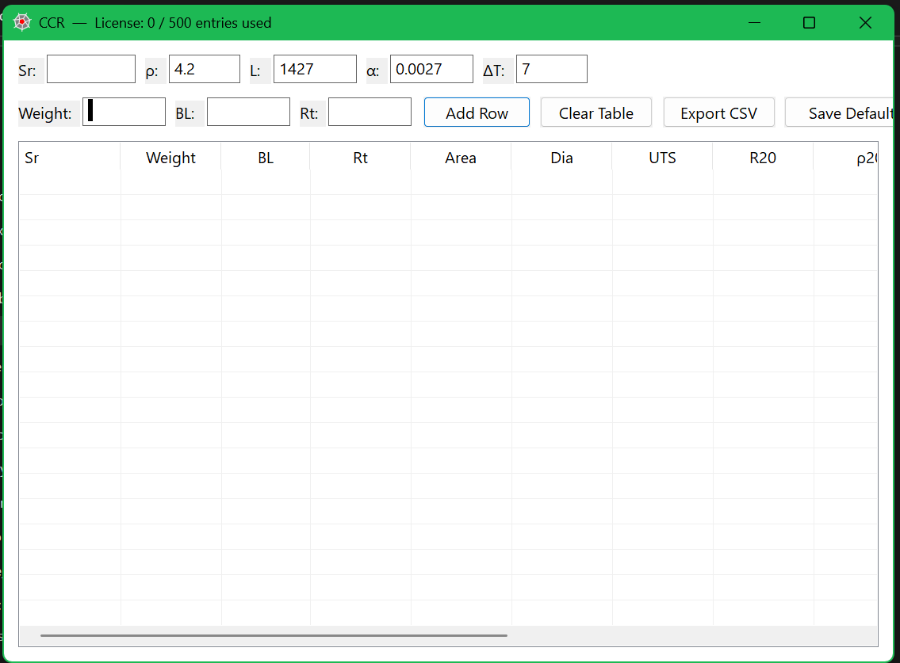

All#
Finding Combinations according to the Target Parameters#
Finding the correct combination of elements A to E based on dataset parameters to achieve the target values for bl and con.
Dataset Parameter Ranges
Variable |
Lower Bound |
Upper Bound |
|---|---|---|
A |
0.48 |
0.50 |
B |
0.80 |
0.90 |
C |
0.52 |
0.88 |
D |
0.17 |
0.25 |
E |
0.66 |
0.70 |
con |
0.40 |
0.47 |
bl |
1700 |
1900 |
Total data points: 100
Scenario 1: Single Target Parameter (con = 0.42)#
First, we consider only one target parameter: con = 0.42.
Index |
A |
B |
C |
D |
E |
con |
bl |
|---|---|---|---|---|---|---|---|
27 |
0.490 |
0.886 |
0.662 |
0.219 |
0.696 |
0.419 |
1849.494 |
79 |
0.482 |
0.814 |
0.806 |
0.193 |
0.681 |
0.418 |
1873.101 |
2 |
0.495 |
0.831 |
0.578 |
0.213 |
0.680 |
0.422 |
1735.402 |
37 |
0.482 |
0.870 |
0.529 |
0.226 |
0.693 |
0.417 |
1748.494 |
Scenario 2: Dual Target Parameters (con = 0.42, bl = 1800)#
Next, we find combinations to meet both target parameters:
con: 0.42
bl: 1800
Index |
A |
B |
C |
D |
E |
con |
bl |
|---|---|---|---|---|---|---|---|
85 |
0.487 |
0.866 |
0.533 |
0.234 |
0.696 |
0.417 |
1811.353 |
92 |
0.495 |
0.890 |
0.816 |
0.200 |
0.671 |
0.413 |
1801.522 |
26 |
0.484 |
0.882 |
0.870 |
0.214 |
0.678 |
0.429 |
1792.507 |
5 |
0.483 |
0.825 |
0.523 |
0.248 |
0.696 |
0.411 |
1792.156 |
In Biochemistry#
In biochemistry, particular reagent kits follow certain mathematical equations.
To use this kit, we need to calibrate it using the given controls. After calibration, a curve is generated, and tests may then be performed, with test results determined according to this curve.
Here you may see 5 data points that represent the controls. One should already know the control values.
While determining each control value, you may use the above optimization method to determine the correct or approximate control values.
Measurement of height using a sensor module#
When measuring distance using a sensor, the output signal is relatively small and its range differs from the MCU’s ADC requirements. Therefore, an amplifier must be placed between them to adjust the signal range before feeding it into the MCU.
Once you receive the numerical sensor output from the MCU, you can perform mathematical operations on the data to generate graphs for acceleration, velocity, and distance.
ADS Keysight (DataDisplay Solution)#
In Keysight ADS, the DataDisplay window becomes available after running a simulation. To perform mathematical operations on your data, Keysight provides its own
Application Extension Language (AEL).However, when working with multiple graphs, writing these equations directly in DataDisplay creates clutter and quickly becomes difficult to manage.
Keysight also supports Python, integrating with VS Code and an embedded Python console for data processing.
Unfortunately, there are very few examples available online, and public documentation for
AELis nearly non-existent—making debugging and finding the right functions a tedious, time-consuming task for any self lerner.For power electronics simulations where a stop time of a few milliseconds combined with a tiny time step generates millions of data rows, using Python’s
polarspackage allows you to query and analyze this large dataset quickly and efficiently.
BSIM-CMG#
Here You may see the characteristics of BSIM-CMG Model.
Note
There are two different temperatures: 25 °C and 45 °C.
You may find this model at https://bsim.berkeley.edu/models/bsimcmg/
Control Charts#
1. Subgroup Metrics & Definitions#
For a process monitored across \(k\) subgroups, where each subgroup contains \(n\) observations:
Subgroup Sample Size: \(n\)
Subgroup Count: \(k\)
2. X-bar (\(\bar{X}\)) Chart#
Monitors the central tendency of the process over time.
Subgroup Mean#
Grand Mean (Center Line)#
Control Limits Using Range (\(\bar{R}\))#
Control Limits Using Standard Deviation (\(\bar{S}\))#
3. Range (R) Chart#
Monitors within-subgroup variation for small sample sizes (typically \(n \le 8\) or \(10\)).
Subgroup Range#
Average Range (Center Line)#
Control Limits#
4. Standard Deviation (S) Chart#
Monitors process variation for moderate-to-large sample sizes (\(n > 8\) or \(10\)) or variable subgroup sizes.
Subgroup Standard Deviation#
Average Standard Deviation (Center Line)#
Control Limits#
5. Within-Subgroup Sigma Estimates#
To estimate the short-term process standard deviation (\(\hat{\sigma}\)) for capability analysis:
From Range:
\[\hat{\sigma}_R = \frac{\bar{R}}{d_2}\]From Standard Deviation:
\[\hat{\sigma}_S = \frac{\bar{S}}{c_4}\]
Note
The constants \(A_2, A_3, D_3, D_4, B_3, B_4, d_2,\) and \(c_4\) are anti-bias control chart factors based on the subgroup sample size \(n\).
6. Process Parameters & Summary#
Metric / Parameter |
Symbol / Formula |
Value |
|---|---|---|
Subgroup Size |
n |
7 |
Subgroup Count |
k |
20 |
Grand Mean |
X-double-bar |
20.0132 |
Upper Specification Limit |
USL |
20.3000 |
Lower Specification Limit |
LSL |
19.7000 |
Est. Within Standard Deviation |
sigma_R = R-bar/d2 |
0.1444 |
Est. Within Standard Deviation |
sigma_S = S-bar/c4 |
0.1409 |
Overall Standard Deviation |
sigma_overall = s |
0.1393 |
7. Capability & Performance Indices#
Category |
Index |
Value |
Interpretation |
|---|---|---|---|
Short-Term (Within) |
Cp |
0.692 |
Process spread vs spec range |
Cpu |
0.662 |
Upper capability relative to USL |
|
Cpl |
0.723 |
Lower capability relative to LSL |
|
Cpk |
0.662 |
Actual capability min(Cpu, Cpl) |
|
Long-Term (Overall) |
Pp |
0.718 |
Overall performance potential |
Ppk |
0.686 |
Actual overall performance |
CCR Rod Calculator#
I’ve made a CCR calculator, this might be useful for folks who are working in the conductor/cable manufacturing domain. I made this for the sake of convenience. It’s a low KB executable app.
You may find the video and the
.exe file to see how to use it.
Note: If you need a demo, kindly mail me, I’ll send you the key to open it.
